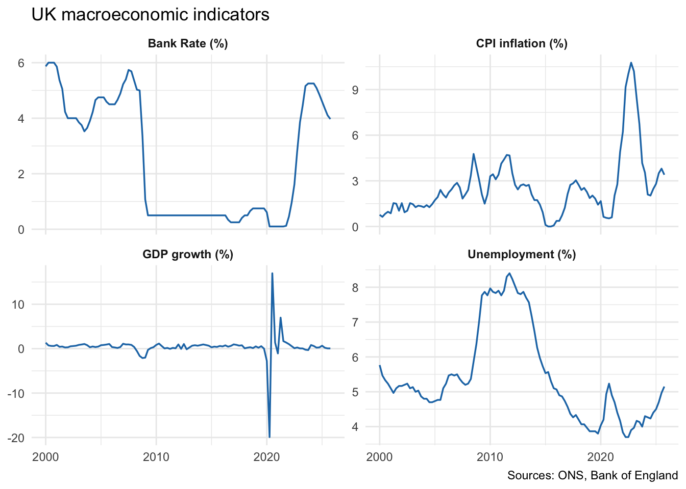

library(ons)2 UK Economic Data
The United Kingdom has some of the best-documented and most accessible economic data in the world. Four institutions publish the bulk of it, and each has a dedicated R package.
This chapter walks through pulling, cleaning, and combining data from the ONS, Bank of England, HMRC, and OBR — the building blocks of any UK macro analysis. By the end, you will have a single merged dataset of the UK’s key macroeconomic indicators, ready for charting or modelling.
2.1 The Office for National Statistics
The ONS is the UK’s national statistical institute, established in 1996 but tracing its lineage back to the General Register Office of 1837. It is responsible for producing the UK’s official measures of economic activity, prices, and the labour market. If you have ever seen a GDP growth figure, an inflation number, or an unemployment rate quoted for the UK, it almost certainly originated at the ONS.
The ONS publishes data through a combination of statistical bulletins (PDFs and web pages) and downloadable datasets. Under the hood, each time series has a four-character identifier called a CDID — for example, IHYQ is quarterly real GDP. The ons package handles the CDID lookup and CSV parsing for you; the convenience functions return tidy data frames with date and value columns.
One thing to be aware of: the ONS revises its data constantly. The first estimate of quarterly GDP is published roughly 40 days after the quarter ends, but it is then revised in the second estimate (roughly 70 days), the quarterly national accounts (roughly 90 days), and annual Blue Book revisions that can change figures going back years. This matters for real-time analysis — the GDP figure you download today for Q3 2023 may differ from what was available in October 2023. Chapter ?sec-time-series-essentials discusses data vintages in more detail.
2.1.1 GDP
GDP — gross domestic product — is the broadest measure of economic activity. The ONS publishes quarterly GDP in chained volume measures (i.e., adjusted for inflation) and in current prices. The ons_gdp() function returns the headline quarterly real GDP index.
gdp <- ons_gdp(measure = "level")ℹ Fetching GDP (level)✔ Fetching GDP (level) [58ms]head(gdp) date value
1 1955-01-01 145457
2 1955-04-01 145551
3 1955-07-01 147995
4 1955-10-01 147119
5 1956-01-01 148955
6 1956-04-01 148835#> date value
#> 1 1955-01-01 145457
#> 2 1955-04-01 145551
#> 3 1955-07-01 147995
#> 4 1955-10-01 147119
#> 5 1956-01-01 148955
#> 6 1956-04-01 148835The series goes back to 1955 and is indexed (100 = 2022). To calculate quarter-on-quarter growth rates, you can use base R or dplyr:
date value growth
279 2024-07-01 696853 0.22623979
280 2024-10-01 698780 0.27652891
281 2025-01-01 703373 0.65728842
282 2025-04-01 704798 0.20259521
283 2025-07-01 705187 0.05519312
284 2025-10-01 705571 0.05445364The ONS also publishes a monthly GDP estimate, which is useful for nowcasting and for pinpointing turning points more precisely than quarterly data allow:
monthly_gdp <- ons_monthly_gdp()ℹ Fetching monthly GDP✔ Fetching monthly GDP [89ms]head(monthly_gdp) date value
1 1997-01-01 61.6
2 1997-02-01 61.9
3 1997-03-01 61.8
4 1997-04-01 62.6
5 1997-05-01 62.1
6 1997-06-01 62.52.1.2 Inflation
The Consumer Prices Index (CPI) is the UK’s headline measure of inflation and the target variable for the Bank of England’s Monetary Policy Committee. The MPC targets 2% annual CPI inflation. ons_cpi() returns the annual percentage change in CPI:
cpi <- ons_cpi()ℹ Fetching CPI (rate)✔ Fetching CPI (rate) [60ms]head(cpi) date value
1 1989-01-01 4.9
2 1989-02-01 5.0
3 1989-03-01 5.0
4 1989-04-01 5.3
5 1989-05-01 5.3
6 1989-06-01 5.2#> date value
#> 1 1989-01-01 5.7
#> 2 1989-02-01 5.8
#> 3 1989-03-01 5.9
#> 4 1989-04-01 5.6
#> 5 1989-05-01 5.4
#> 6 1989-06-01 5.2Note that CPI data is monthly. The annual rate — the percentage change compared with the same month a year earlier — is the figure that makes headlines and that the MPC targets. When inflation hit 11.1% in October 2022, this was the CPI annual rate.
2.1.3 The labour market
The labour market data from the ONS covers three key rates: unemployment, employment, and economic inactivity. Together they describe the entire working-age population. The unemployment rate gets the most attention, but inactivity — people who are neither working nor looking for work — has become increasingly important since the pandemic, as a rise in long-term sickness has pushed inactivity well above pre-COVID levels.
unemp <- ons_unemployment()ℹ Fetching unemployment rate✔ Fetching unemployment rate [79ms]head(unemp) date value
1 1971-02-01 3.8
2 1971-03-01 3.9
3 1971-04-01 4.0
4 1971-05-01 4.1
5 1971-06-01 4.1
6 1971-07-01 4.2#> date value
#> 1 1971-03-01 3.6
#> 2 1971-06-01 3.8
#> 3 1971-09-01 3.9
#> 4 1971-12-01 3.9
#> 5 1972-03-01 4.0
#> 6 1972-06-01 3.9The unemployment rate is reported as a three-month rolling average — the figure for March 2024 covers the January-to-March period. This smooths out monthly noise but means the series lags reality by about six weeks.
Wages data is equally important for monetary policy, since wage growth feeds into service-sector inflation. The ons_wages() function returns average weekly earnings growth:
wages <- ons_wages(measure = "growth")ℹ Fetching average weekly earnings (growth)✔ Fetching average weekly earnings (growth) [33ms]head(wages) date value
1 2001-03-01 6.1
2 2001-04-01 6.2
3 2001-05-01 5.1
4 2001-06-01 5.5
5 2001-07-01 5.2
6 2001-08-01 5.3#> date value
#> 1 2001-03-01 6.1
#> 2 2001-04-01 6.2
#> 3 2001-05-01 5.1
#> 4 2001-06-01 5.5
#> 5 2001-07-01 5.2
#> 6 2001-08-01 5.3The MPC watches this series closely. During 2023-24, wage growth running at 7-8% was a key reason the Committee held rates at 5.25% for an extended period — service-sector firms pass wage costs through to prices, and wage growth at that level is inconsistent with 2% inflation.
2.2 The Bank of England
library(boe)
Attaching package: 'boe'The following object is masked from 'package:ons':
clear_cacheThe Bank of England is the UK’s central bank, responsible for monetary policy, financial stability, and the regulation of banks and insurers. For macroeconomists, its most important data publications are the policy rate (Bank Rate), money market rates, the gilt yield curve, and lending data.
Where the ONS tells you what the economy did, the Bank of England’s data tells you what monetary conditions are. Bank Rate is the lever; gilt yields, mortgage rates, and exchange rates are the transmission mechanism through which it affects the real economy.
2.2.1 Bank Rate
Bank Rate is the interest rate that the Bank of England pays on reserves held by commercial banks overnight. It is the anchor for the entire UK interest rate structure. When the MPC raises Bank Rate, mortgage rates rise, corporate borrowing costs increase, and the exchange rate typically appreciates — all of which slow the economy and reduce inflation.
bank_rate <- boe_bank_rate()ℹ Using cached data✔ Using cached data [3ms]head(bank_rate) date rate_pct
1 1975-01-02 11.5
2 1975-01-03 11.5
3 1975-01-06 11.5
4 1975-01-07 11.5
5 1975-01-08 11.5
6 1975-01-09 11.5#> date value
#> 1 1694-08-01 6.00
#> 2 1694-09-01 6.00
#> 3 1694-10-01 6.00
#> 4 1694-11-01 6.00
#> 5 1694-12-01 6.00
#> 6 1695-01-01 6.00The series goes back to 1694, making it one of the longest continuous financial time series in the world. For most practical analysis you will want to filter to a more recent period:
bank_rate_recent <- boe_bank_rate(from = "2000-01-01")ℹ Using cached data✔ Using cached data [3ms]2.2.2 The gilt yield curve
The yield curve — the relationship between interest rates and maturity — is one of the most information-rich objects in financial markets. A normal yield curve slopes upward (longer-term rates are higher than short-term rates); an inverted yield curve (short rates above long rates) has historically been a reliable predictor of recession.
gilts <- boe_yield_curve(from = "2020-01-01")ℹ Using cached data✔ Using cached data [3ms]head(gilts) date maturity yield_pct
1 2020-01-02 10yr 0.8523
2 2020-01-02 20yr 1.1599
3 2020-01-02 5yr 0.5519
4 2020-01-03 10yr 0.8094
5 2020-01-03 20yr 1.0989
6 2020-01-03 5yr 0.5349The Bank of England publishes both nominal and real (inflation-linked) yield curves. The difference between them — the breakeven inflation rate — gives you the market’s expectation of future inflation. This is a key input for monetary policy analysis and is covered in Chapter 8.
2.2.3 Mortgage rates
Mortgage rates matter because housing is the main transmission channel for monetary policy in the UK. Most UK mortgages are fixed for two or five years, so changes in Bank Rate feed through to household budgets with a lag as borrowers refinance. The boe_mortgage_rates() function provides average quoted mortgage rates by type:
mortgages <- boe_mortgage_rates()ℹ Using cached data✔ Using cached data [3ms]head(mortgages) date type rate_pct
1 1995-01-31 2yr_fixed 8.13
2 1995-02-28 2yr_fixed 8.38
3 1995-03-31 2yr_fixed 8.08
4 1995-04-30 2yr_fixed 8.29
5 1995-05-31 2yr_fixed 8.22
6 1995-06-30 2yr_fixed 7.94The spread between mortgage rates and Bank Rate is itself informative — when it widens, banks are tightening lending conditions beyond what the policy rate alone would imply.
2.3 HM Revenue & Customs
library(hmrc)
Attaching package: 'hmrc'The following object is masked from 'package:boe':
clear_cacheThe following object is masked from 'package:ons':
clear_cacheHMRC is the UK’s tax authority. From a macroeconomic perspective, its most valuable publication is monthly tax receipt data. Tax receipts are a real-time read on economic activity, because they respond immediately to changes in employment (income tax and NICs), consumer spending (VAT), corporate profits (corporation tax), and the housing market (stamp duty).
Unlike ONS data, which is estimated from surveys and subject to revision, tax receipts are administrative data — they reflect actual money collected by the government. This makes them useful for cross-checking ONS estimates and for nowcasting exercises.
2.3.1 Tax receipts
The get_tax_receipts() function returns monthly receipts for all major tax heads, or you can filter to a specific tax:
receipts <- get_tax_receipts()ℹ Resolving download URL from GOV.UK Content API✔ Resolving download URL from GOV.UK Content API [142ms]ℹ Using cached file✔ Using cached file [7ms]ℹ Parsing dataNew names:
✔ Parsing data [286ms]
• `` -> `...1`
• `` -> `...2`
• `` -> `...3`
• `` -> `...4`
• `` -> `...5`
• `` -> `...6`
• `` -> `...7`
• `` -> `...8`
• `` -> `...9`
• `` -> `...10`
• `` -> `...11`
• `` -> `...12`
• `` -> `...13`
• `` -> `...14`
• `` -> `...15`
• `` -> `...16`
• `` -> `...17`
• `` -> `...18`
• `` -> `...19`
• `` -> `...20`
• `` -> `...21`
• `` -> `...22`
• `` -> `...23`
• `` -> `...24`
• `` -> `...25`
• `` -> `...26`
• `` -> `...27`
• `` -> `...28`
• `` -> `...29`
• `` -> `...30`
• `` -> `...31`
• `` -> `...32`
• `` -> `...33`
• `` -> `...34`
• `` -> `...35`
• `` -> `...36`
• `` -> `...37`
• `` -> `...38`
• `` -> `...39`
• `` -> `...40`
• `` -> `...41`
• `` -> `...42`
• `` -> `...43`
• `` -> `...44`
• `` -> `...45`
• `` -> `...46`
• `` -> `...47`head(receipts) date tax_head description receipts_gbp_m
1 2016-04-01 aggregates_levy Aggregates Levy 40
2 2016-05-01 aggregates_levy Aggregates Levy 22
3 2016-06-01 aggregates_levy Aggregates Levy 20
4 2016-07-01 aggregates_levy Aggregates Levy 51
5 2016-08-01 aggregates_levy Aggregates Levy 27
6 2016-09-01 aggregates_levy Aggregates Levy 21You can see which tax heads are available using list_tax_heads():
list_tax_heads() tax_head
1 total_receipts
2 income_tax
3 capital_gains_tax
4 inheritance_tax
5 apprenticeship_levy
6 nics_total
7 nics_employer
8 nics_employee
9 nics_self_employed
10 vat
11 corporation_tax
12 bank_levy
13 bank_surcharge
14 bank_payroll_tax
15 diverted_profits_tax
16 digital_services_tax
17 residential_property_developer_tax
18 energy_profits_levy
19 electricity_generators_levy
20 economic_crime_levy
21 petroleum_revenue_tax
22 fuel_duty
23 stamp_duty_shares
24 sdlt
25 ated
26 tobacco_duty
27 spirits_duty
28 beer_duty
29 wine_duty
30 cider_duty
31 gambling_duties
32 air_passenger_duty
33 insurance_premium_tax
34 landfill_tax
35 climate_change_levy
36 aggregates_levy
37 soft_drinks_levy
38 plastic_packaging_tax
39 customs_duties
40 miscellaneous
41 penalties
description category
1 Total HMRC receipts total
2 Income Tax (PAYE and Self Assessment) income
3 Capital Gains Tax income
4 Inheritance Tax income
5 Apprenticeship Levy income
6 National Insurance Contributions (all classes) nics
7 National Insurance Contributions - employer (Class 1 PAYE) nics
8 National Insurance Contributions - employee (Class 1 PAYE) nics
9 National Insurance Contributions - self-employed (Class 2 & 4) nics
10 Value Added Tax consumption
11 Corporation Tax (onshore) income
12 Bank Levy income
13 Bank Surcharge income
14 Bank Payroll Tax income
15 Diverted Profits Tax income
16 Digital Services Tax income
17 Residential Property Developer Tax income
18 Energy Profits Levy income
19 Electricity Generators Levy income
20 Economic Crime Levy income
21 Petroleum Revenue Tax income
22 Hydrocarbon Oil Duties (Fuel Duty) consumption
23 Stamp Duty Reserve Tax (shares) property
24 Stamp Duty Land Tax property
25 Annual Tax on Enveloped Dwellings property
26 Tobacco Duties consumption
27 Spirits Duties consumption
28 Beer Duties consumption
29 Wine and Made-Wine Duties consumption
30 Cider and Perry Duties consumption
31 Betting and Gaming Duties consumption
32 Air Passenger Duty consumption
33 Insurance Premium Tax consumption
34 Landfill Tax environment
35 Climate Change Levy environment
36 Aggregates Levy environment
37 Soft Drinks Industry Levy consumption
38 Plastic Packaging Tax consumption
39 Customs Duties other
40 Miscellaneous receipts other
41 Penalties and interest other
available_from
1 2016
2 2016
3 2016
4 2016
5 2017
6 2016
7 2016
8 2016
9 2016
10 2016
11 2016
12 2016
13 2016
14 2010
15 2016
16 2020
17 2022
18 2022
19 2023
20 2023
21 2016
22 2016
23 2016
24 2016
25 2016
26 2016
27 2016
28 2016
29 2016
30 2016
31 2016
32 2016
33 2016
34 2016
35 2016
36 2016
37 2018
38 2022
39 2016
40 2016
41 2016To pull a specific tax — for example, VAT receipts:
vat <- get_tax_receipts(tax = "vat")ℹ Resolving download URL from GOV.UK Content API✔ Resolving download URL from GOV.UK Content API [27ms]ℹ Using cached file✔ Using cached file [6ms]ℹ Parsing dataNew names:
✔ Parsing data [180ms]
• `` -> `...1`
• `` -> `...2`
• `` -> `...3`
• `` -> `...4`
• `` -> `...5`
• `` -> `...6`
• `` -> `...7`
• `` -> `...8`
• `` -> `...9`
• `` -> `...10`
• `` -> `...11`
• `` -> `...12`
• `` -> `...13`
• `` -> `...14`
• `` -> `...15`
• `` -> `...16`
• `` -> `...17`
• `` -> `...18`
• `` -> `...19`
• `` -> `...20`
• `` -> `...21`
• `` -> `...22`
• `` -> `...23`
• `` -> `...24`
• `` -> `...25`
• `` -> `...26`
• `` -> `...27`
• `` -> `...28`
• `` -> `...29`
• `` -> `...30`
• `` -> `...31`
• `` -> `...32`
• `` -> `...33`
• `` -> `...34`
• `` -> `...35`
• `` -> `...36`
• `` -> `...37`
• `` -> `...38`
• `` -> `...39`
• `` -> `...40`
• `` -> `...41`
• `` -> `...42`
• `` -> `...43`
• `` -> `...44`
• `` -> `...45`
• `` -> `...46`
• `` -> `...47`head(vat) date tax_head description receipts_gbp_m
4603 2016-04-01 vat Value Added Tax 11087
4604 2016-05-01 vat Value Added Tax 10957
4605 2016-06-01 vat Value Added Tax 6058
4606 2016-07-01 vat Value Added Tax 12227
4607 2016-08-01 vat Value Added Tax 10789
4608 2016-09-01 vat Value Added Tax 64862.3.2 Corporation tax and stamp duty
For more granular data on specific taxes, the hmrc package provides dedicated functions. Corporation tax receipts give a read on corporate profitability:
corp_tax <- get_corporation_tax()ℹ Resolving download URL from GOV.UK Content API✔ Resolving download URL from GOV.UK Content API [58ms]ℹ Using cached file✔ Using cached file [4ms]ℹ Parsing dataNew names:
✔ Parsing data [49ms]
• `` -> `...1`
• `` -> `...2`
• `` -> `...3`
• `` -> `...4`
• `` -> `...5`
• `` -> `...6`
• `` -> `...7`head(corp_tax) tax_year type description receipts_gbp_m
1 2019-20 all_corporate_taxes All Corporate Taxes 66025
2 2020-21 all_corporate_taxes All Corporate Taxes 54238
3 2021-22 all_corporate_taxes All Corporate Taxes 67548
4 2022-23 all_corporate_taxes All Corporate Taxes 84595
5 2023-24 all_corporate_taxes All Corporate Taxes 93675
6 2024-25 all_corporate_taxes All Corporate Taxes 97161Stamp duty land tax (SDLT) receipts track the housing market. During housing booms, SDLT receipts surge; during downturns, they collapse. The sensitivity of this tax to housing transactions makes it a useful high-frequency housing indicator:
sdlt <- get_stamp_duty()ℹ Resolving download URL from GOV.UK Content API✔ Resolving download URL from GOV.UK Content API [48ms]ℹ Using cached file✔ Using cached file [3ms]ℹ Parsing dataNew names:
✔ Parsing data [97ms]
• `` -> `...1`
• `` -> `...2`
• `` -> `...3`
• `` -> `...4`
• `` -> `...5`
• `` -> `...6`
• `` -> `...7`
• `` -> `...8`head(sdlt) tax_year type description receipts_gbp_m
1 2003-04 sdlt_leases SDLT on new leases 405
2 2004-05 sdlt_leases SDLT on new leases 945
3 2005-06 sdlt_leases SDLT on new leases 810
4 2006-07 sdlt_leases SDLT on new leases 1330
5 2007-08 sdlt_leases SDLT on new leases 915
6 2008-09 sdlt_leases SDLT on new leases 5952.3.3 Property transactions
HMRC also publishes monthly counts of property transactions — a direct measure of housing market activity that complements the ONS house price index:
transactions <- get_property_transactions()ℹ Resolving download URL from GOV.UK Content API✔ Resolving download URL from GOV.UK Content API [50ms]ℹ Using cached file✔ Using cached file [4ms]ℹ Parsing dataNew names:
New names:
✔ Parsing data [112ms]
• `` -> `...1`
• `` -> `...2`
• `` -> `...3`
• `` -> `...4`
• `` -> `...5`
• `` -> `...6`
• `` -> `...7`head(transactions) date nation type transactions
1 2005-04-01 england non_residential 9200
2 2005-05-01 england non_residential 8620
3 2005-06-01 england non_residential 9960
4 2005-07-01 england non_residential 10120
5 2005-08-01 england non_residential 9100
6 2005-09-01 england non_residential 94102.4 The Office for Budget Responsibility
library(obr)
Attaching package: 'obr'The following object is masked from 'package:hmrc':
clear_cacheThe following object is masked from 'package:boe':
clear_cacheThe following object is masked from 'package:ons':
clear_cacheThe OBR is the UK’s independent fiscal watchdog, created in 2010 to provide impartial analysis of the public finances. It produces five-year economic and fiscal forecasts at each Budget or fiscal event, certifying whether the government is on track to meet its fiscal rules. The OBR’s forecasts are the official projections used in all government planning.
For macroeconomists, the OBR is valuable for two reasons. First, its Public Finances Databank contains decades of historical fiscal data — government receipts, expenditure, borrowing, and debt — in a clean, consistent format. Second, its Economic and Fiscal Outlook (EFO) publications contain forecast vintages that allow you to compare successive forecasts and assess how the fiscal position has changed.
2.4.1 Public finances
The get_public_finances() function returns the full public finances dataset. For specific fiscal aggregates, there are convenience functions:
# Public sector net borrowing (the deficit)
psnb <- get_psnb()ℹ Loading from cache. Use `refresh = TRUE` to re-download.head(psnb) year psnb_bn
1 1946-47 0.629
2 1947-48 0.079
3 1948-49 -0.496
4 1949-50 -0.587
5 1950-51 -0.466
6 1951-52 -0.069# Public sector net debt
psnd <- get_psnd()ℹ Loading from cache. Use `refresh = TRUE` to re-download.head(psnd) year psnd_bn
1 1974-75 52.1
2 1975-76 64.7
3 1976-77 73.6
4 1977-78 79.5
5 1978-79 88.6
6 1979-80 98.2# Government receipts and expenditure
receipts <- get_receipts()ℹ Loading from cache. Use `refresh = TRUE` to re-download.expenditure <- get_expenditure()ℹ Loading from cache. Use `refresh = TRUE` to re-download.Public sector net borrowing (PSNB) — the government’s deficit — is the single most-watched fiscal aggregate. It measures the gap between what the government spends and what it collects in tax revenue. When PSNB is positive, the government is borrowing; the cumulated stock of past borrowing is public sector net debt (PSND).
2.4.2 Fiscal forecasts
The OBR’s forecast vintages let you see how expectations have changed over time. You can retrieve forecasts for specific fiscal series and compare the OBR’s projections at different fiscal events:
# See what forecast series are available
list_forecast_series() series sheet description
1 PSNB £PSNB Public sector net borrowing (£bn)
2 PSNB_pct PSNB Public sector net borrowing (% of GDP)
3 PSND PSND Public sector net debt (% of GDP)
4 receipts £PSCR Public sector current receipts (£bn)
5 receipts_pct PSCR Public sector current receipts (% of GDP)
6 expenditure £TME Total managed expenditure (£bn)
7 expenditure_pct TME Total managed expenditure (% of GDP)
8 GDP NGDP Nominal GDP growth (%)
9 real_GDP UKGDP Real GDP growth (%)
10 CPI CPI CPI inflation (%)# Get PSNB forecasts across all available EFO vintages
psnb_forecasts <- get_forecasts(series = "PSNB")ℹ Loading from cache. Use `refresh = TRUE` to re-download.head(psnb_forecasts) series forecast_date fiscal_year value
1 PSNB April 1970 1970-71 -0.2
2 PSNB March 1971 1970-71 0.6
106 PSNB March 1971 1971-72 1.2
107 PSNB March 1972 1971-72 1.3
211 PSNB March 1972 1972-73 3.4
212 PSNB March 1973 1972-73 2.9Comparing forecast vintages is a powerful analytical tool. If the OBR’s borrowing forecast has risen by 20 billion pounds between two fiscal events, you can decompose the change into economic determinants (weaker growth, higher inflation) and policy measures (tax cuts, spending increases). This is exactly the analysis that fiscal journalists and Treasury economists do on Budget day.
2.4.3 Welfare spending
The OBR also publishes detailed breakdowns of welfare spending, which is the largest single component of government expenditure:
welfare <- get_welfare_spending()ℹ Loading from cache. Use `refresh = TRUE` to re-download.head(welfare) year series value
1 1978-79 Working-age incapacity benefits spending 0.8916853
2 1979-80 Working-age incapacity benefits spending 0.8109902
3 1980-81 Working-age incapacity benefits spending 0.7620921
4 1981-82 Working-age incapacity benefits spending 0.7774238
5 1982-83 Working-age incapacity benefits spending 0.7563964
6 1983-84 Working-age incapacity benefits spending 0.69817482.5 Putting it together: a UK macro dataset
A common task in applied macro is to assemble a single dataset of key UK macro indicators — GDP growth, inflation, unemployment, and Bank Rate — for analysis or charting. This requires merging data from different sources, which means dealing with different frequencies and date formats.
The good news is that all of the packages used in this chapter return data frames with a date column of class Date, so merging is straightforward. The complication is frequency: GDP is quarterly, CPI and unemployment are monthly, and Bank Rate changes irregularly (it stays constant between MPC decisions).
Let us build a quarterly dataset step by step.
2.5.1 Step 1: Pull the raw data
ℹ Fetching GDP (level)✔ Fetching GDP (level) [43ms]cpi <- ons_cpi() # monthlyℹ Fetching CPI (rate)✔ Fetching CPI (rate) [58ms]unemp <- ons_unemployment() # monthly (3-month rolling)ℹ Fetching unemployment rate✔ Fetching unemployment rate [79ms]br <- boe_bank_rate() # irregular (changes at MPC meetings)ℹ Using cached data✔ Using cached data [3ms]2.5.2 Step 2: Convert everything to quarterly frequency
For monthly series, we take the quarterly average — the mean of the three monthly values within each quarter. For Bank Rate, which is recorded whenever it changes, we also take the quarterly average (the mean rate prevailing during the quarter).
Attaching package: 'dplyr'The following objects are masked from 'package:stats':
filter, lagThe following objects are masked from 'package:base':
intersect, setdiff, setequal, union# Helper: assign each date to the first day of its quarter
to_quarter <- function(d) {
as.Date(paste0(format(d, "%Y-"),
sprintf("%02d", (as.numeric(format(d, "%m")) - 1) %/% 3 * 3 + 1),
"-01"))
}
# Quarterly CPI: average of the three monthly readings
cpi_q <- cpi |>
mutate(quarter = to_quarter(date)) |>
summarise(cpi = mean(value, na.rm = TRUE), .by = quarter) |>
rename(date = quarter)
# Quarterly unemployment: average of the three monthly readings
unemp_q <- unemp |>
mutate(quarter = to_quarter(date)) |>
summarise(unemployment = mean(value, na.rm = TRUE), .by = quarter) |>
rename(date = quarter)
# Quarterly Bank Rate: average over the quarter
# First expand to monthly, then average
br_monthly <- br |>
arrange(date) |>
mutate(month = as.Date(format(date, "%Y-%m-01")))
# For each month, the prevailing rate is the last change on or before that month
months <- data.frame(date = seq(min(br_monthly$month),
Sys.Date(),
by = "month"))
br_filled <- months |>
left_join(br |> mutate(date = as.Date(format(date, "%Y-%m-01"))),
by = "date") |>
tidyr::fill(rate_pct, .direction = "down")
br_q <- br_filled |>
mutate(quarter = to_quarter(date)) |>
summarise(bank_rate = mean(rate_pct, na.rm = TRUE), .by = quarter) |>
rename(date = quarter)2.5.3 Step 3: Merge into a single data frame
Now we have four quarterly data frames, each with a date column. A series of left joins on date produces the final dataset:
# Prepare GDP with a cleaner column name
gdp_clean <- gdp |>
select(date, gdp = value)
# Merge everything
uk_macro <- gdp_clean |>
left_join(cpi_q, by = "date") |>
left_join(unemp_q, by = "date") |>
left_join(br_q, by = "date")
tail(uk_macro) date gdp cpi unemployment bank_rate
279 2024-07-01 696853 2.033333 4.233333 5.088462
280 2024-10-01 698780 2.466667 4.400000 4.855469
281 2025-01-01 703373 2.800000 4.500000 4.599206
282 2025-04-01 704798 3.500000 4.700000 4.348361
283 2025-07-01 705187 3.800000 4.966667 4.103846
284 2025-10-01 705571 3.400000 5.150000 3.968750#> date gdp cpi unemployment bank_rate
#> ...2.5.4 Step 4: Calculate GDP growth
The GDP series is an index, not a growth rate. To get quarter-on-quarter growth:
uk_macro <- uk_macro |>
mutate(gdp_growth = (gdp / lag(gdp) - 1) * 100)2.5.5 Step 5: A quick chart
With all four series in one data frame, you can produce a multi-panel chart showing the state of the UK economy:
library(ggplot2)
library(tidyr)
uk_plot <- uk_macro |>
filter(date >= as.Date("2000-01-01")) |>
select(date, `GDP growth (%)` = gdp_growth,
`CPI inflation (%)` = cpi,
`Unemployment (%)` = unemployment,
`Bank Rate (%)` = bank_rate) |>
pivot_longer(-date, names_to = "series", values_to = "value")
ggplot(uk_plot, aes(x = date, y = value)) +
geom_line(colour = "#1f77b4", linewidth = 0.6) +
facet_wrap(~series, scales = "free_y", ncol = 2) +
labs(title = "UK macroeconomic indicators",
x = NULL, y = NULL,
caption = "Sources: ONS, Bank of England") +
theme_minimal(base_size = 11) +
theme(strip.text = element_text(face = "bold"))
This gives you a dashboard-style view of the UK economy in about 40 lines of code. The same dataset serves as the starting point for the Phillips curve estimation in Chapter ?sec-inflation-phillips-curve and the VAR model in Chapter ?sec-var-models.
2.6 A note on data revisions
If you download GDP data today and again in three months, the numbers may differ — even for quarters that are years in the past. The ONS revises GDP in three stages: the first estimate (published about 40 days after the quarter ends), the second estimate (about 70 days), and the quarterly national accounts (about 90 days). Annual Blue Book revisions can change the entire historical series.
This is not a flaw in the data; it reflects genuine improvements in measurement as more information becomes available. But it matters for practitioners. If you are evaluating a forecast made in October 2023, you need to compare it against the GDP estimate that was available in October 2023, not today’s revised figure. The difference can be substantial — early GDP estimates have been revised by as much as a full percentage point.
For academic research and rigorous forecast evaluation, you need real-time data vintages. The ONS does not provide a convenient vintage database (unlike the Federal Reserve Bank of Philadelphia, which maintains a famous real-time dataset for the US). In practice, UK economists either save snapshots of data at regular intervals or use the OECD’s real-time database for cross-country comparisons. This is an area where careful data management — saving your downloaded data with timestamps — pays off.
2.7 Exercises
Pull UK GDP data with
ons_gdp()and calculate the quarter-on-quarter growth rate. In which quarter was growth weakest since 2010? (Hint: the answer involves the COVID pandemic, but check the data to be sure.)Download Bank Rate with
boe_bank_rate()and CPI inflation withons_cpi(). Merge them into a monthly dataset and plot both on the same chart using facets. What do you notice about the relationship between the two during 2021-23?Using
hmrc::get_tax_receipts(), pull the latest tax receipts data. Which tax head generates the most annual revenue? Plot the monthly time series for the three largest tax heads on a single chart.Build the quarterly UK macro dataset described in Section 2.5. Extend it by adding wage growth from
ons_wages(). Calculate the real wage growth rate (nominal wage growth minus CPI inflation). Plot real wage growth since 2008. When was the longest period of falling real wages?Pull PSNB forecasts from the OBR using
obr::get_forecasts(series = "PSNB"). Plot the forecast paths from the three most recent fiscal events on a single chart. How has the borrowing outlook changed?